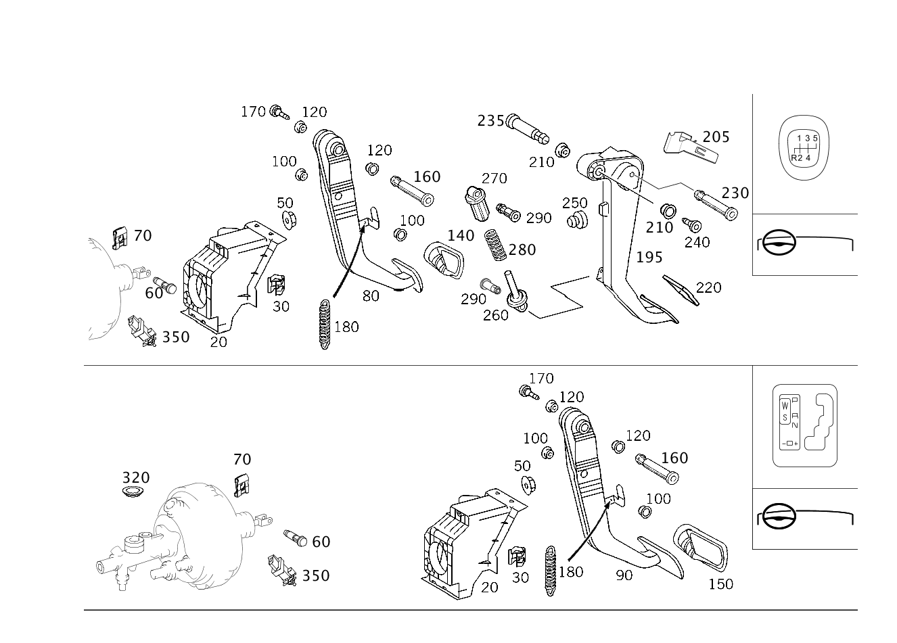

| № | Артикул | Название | Кол. | Примечание | Ограничение |
|---|---|---|---|---|---|
| 20 | A 203 290 07 19 | Опорный кронштейн (BEARING BRACKET) | 1 | ПЕДАЛЬНЫЙ УЗЕЛ Рулевое управление: Влево | 423/427 |
| 20 | A 203 290 10 19 | Опорный кронштейн (BEARING BRACKET) | 1 | ПЕДАЛЬНЫЙ УЗЕЛ Рулевое управление: Влево [402] БОЛЬШЕ НЕ ПОСТАВЛЯЕТСЯ | |
| 20 | A 203 290 15 19 | Опорный кронштейн (BEARING BRACKET) | 1 | ПЕДАЛЬНЫЙ УЗЕЛ Рулевое управление: Влево | |
| 20 | A 203 290 15 19 | Опорный кронштейн (BEARING BRACKET) | 1 | ПЕДАЛЬНЫЙ УЗЕЛ Рулевое управление: Влево | 411 |
| 25 | A 203 290 06 19 | Опорный кронштейн (BEARING BRACKET) | 1 | ПЕДАЛЬНЫЙ УЗЕЛ Рулевое управление: Вправо | 423/427 |
| 25 | A 203 290 20 19 | Опорный кронштейн (BEARING BRACKET) | 1 | ПЕДАЛЬНЫЙ УЗЕЛ Рулевое управление: Вправо [402] БОЛЬШЕ НЕ ПОСТАВЛЯЕТСЯ | 423/427 |
| 25 | A 203 290 05 19 | Опорный кронштейн (BEARING BRACKET) | 1 | ПЕДАЛЬНЫЙ УЗЕЛ Рулевое управление: Вправо [402] БОЛЬШЕ НЕ ПОСТАВЛЯЕТСЯ | |
| 25 | A 203 290 16 19 | Опорный кронштейн (BEARING BRACKET) | 1 | ПЕДАЛЬНЫЙ УЗЕЛ Рулевое управление: Вправо | |
| 25 | A 203 290 16 19 | Опорный кронштейн (BEARING BRACKET) | 1 | ПЕДАЛЬНЫЙ УЗЕЛ Рулевое управление: Вправо | 411 |
| 30 | A 210 988 05 78 | - Скоба (CLAMP) | 2 | К ОПОРНОМУ КРОНШТЕЙНУ | |
| 45 | N 910143 008017 | Винт с 6-гр. глвк (HEXALOBULAR SCREW) | 2 | ПЕДАЛЬНЫЙ УЗЕЛ К МОТОР.ЩИТУ; M8X55 Рулевое управление: Вправо | |
| 50 | N 000000 003175 | Гайка (NUT) | 3 | ПЕДАЛЬНЫЙ УЗЕЛ К МОТОР.ЩИТУ; M8 Рулевое управление: Влево | |
| 50 | N 000000 003175 | Гайка (NUT) | 2 | ПЕДАЛЬНЫЙ УЗЕЛ К МОТОР.ЩИТУ; M8 Рулевое управление: Вправо | |
| 60 | A 203 292 01 74 | Палец (PIN) | 1 | КРЕПЛЕНИЕ ПЕДАЛЬНОГО УЗЛА | |
| 70 | N 912002 008003 | Механический фиксатор (MECHANICAL SECURING) | 1 | БОЛТ; 8 MM | |
| 80 | A 203 290 04 18 | Педаль (BRAKE PEDAL) | 1 | ПЕДАЛЬ ТОРМОЗА Рулевое управление: Влево [402] БОЛЬШЕ НЕ ПОСТАВЛЯЕТСЯ | |
| 80 | A 203 290 16 18 | Педаль (BRAKE PEDAL) | 1 | ПЕДАЛЬ ТОРМОЗА Рулевое управление: Вправо [402] БОЛЬШЕ НЕ ПОСТАВЛЯЕТСЯ | |
| 80 | A 203 290 18 18 | Педаль (BRAKE PEDAL) | 1 | ПЕДАЛЬ ТОРМОЗА Рулевое управление: Вправо [402] БОЛЬШЕ НЕ ПОСТАВЛЯЕТСЯ | 952/950/P84/P61 |
| 80 | A 203 290 04 18 | Педаль (BRAKE PEDAL) | 1 | ПЕДАЛЬ ТОРМОЗА Рулевое управление: Влево [402] БОЛЬШЕ НЕ ПОСТАВЛЯЕТСЯ | 952/950/P84/P61 |
| 80 | A 203 290 06 18 | Педаль (BRAKE PEDAL) | 1 | ПЕДАЛЬ ТОРМОЗА Рулевое управление: Влево [402] БОЛЬШЕ НЕ ПОСТАВЛЯЕТСЯ | (952/950/P84/P61)+(423/427) |
| 80 | A 203 290 18 18 | Педаль (BRAKE PEDAL) | 1 | ПЕДАЛЬ ТОРМОЗА Рулевое управление: Вправо [402] БОЛЬШЕ НЕ ПОСТАВЛЯЕТСЯ | (952/950/P84/P61)+(423/427) |
| 90 | A 203 290 06 18 | Педаль (BRAKE PEDAL) | 1 | ПЕДАЛЬ ТОРМОЗА Рулевое управление: Влево [402] БОЛЬШЕ НЕ ПОСТАВЛЯЕТСЯ | 423/427 |
| 90 | A 203 290 18 18 | Педаль (BRAKE PEDAL) | 1 | ПЕДАЛЬ ТОРМОЗА Рулевое управление: Вправо [402] БОЛЬШЕ НЕ ПОСТАВЛЯЕТСЯ | 423/424/427 |
| 100 | A 210 292 01 50 | - Втулка подшипника (BEARING BUSHING) | 2 | ПЕДАЛЬНЫЙ УЗЕЛ Рулевое управление: Влево | |
| 100 | A 210 292 01 50 | - Втулка подшипника (BEARING BUSHING) | 2 | ПЕДАЛЬНЫЙ УЗЕЛ Рулевое управление: Вправо | 423/427 |
| 120 | A 124 292 00 50 | - Втулка подшипника (BEARING BUSHING) | 2 | ПЕДАЛЬНЫЙ УЗЕЛ | |
| 140 | A 201 292 00 82 | - Чехол (PEDAL PAD) | 1 | ПЕДАЛЬ ТОРМОЗА | -(952/950/P84/P61/423/424) |
| 140 | A 170 290 00 82 | - Чехол (COVER) | 1 | ПЕДАЛЬ ТОРМОЗА | (952/950/P84/P61)+-(423/424) |
| 140 | A 170 290 01 82 | - Чехол (COVER) | 1 | ПЕДАЛЬ ТОРМОЗА | (952/950/P84/P61)+(423/427) |
| 150 | A 123 291 00 82 | - Накладка педали (PEDAL PAD) | 1 | ПЕДАЛЬ ТОРМОЗА | (423/424/427)+-(M156/M113+M55/952/950/P84/P61) |
| 150 | A 201 292 00 82 | - Чехол (PEDAL PAD) | 1 | ПЕДАЛЬ ТОРМОЗА | -(952/950/P84/P61/423/424) |
| 150 | A 170 290 00 82 | - Чехол (COVER) | 1 | ПЕДАЛЬ ТОРМОЗА | (952/950/P84/P61)+-(423/424) |
| 150 | A 170 290 01 82 | - Чехол (COVER) | 1 | ПЕДАЛЬ ТОРМОЗА | (952/950/P84/P61)+(423/427) |
| 160 | A 168 291 03 74 | Палец (PIN) | 1 | ПЕДАЛЬ ТОРМОЗА НА ОПОРЕ Рулевое управление: Влево | |
| 160 | A 168 291 03 74 | Палец (PIN) | 1 | ПЕДАЛЬ ТОРМОЗА НА ОПОРЕ Рулевое управление: Вправо | 423/427 |
| 170 | A 168 291 00 55 | Пробка (GROMMET) | 1 | ПЕДАЛЬ ТОРМОЗА НА ОПОРЕ Рулевое управление: Влево | -(423/424/427) |
| 170 | A 168 291 00 55 | Пробка (GROMMET) | 1 | ПЕДАЛЬ ТОРМОЗА НА ОПОРЕ | 423/427 |
| 180 | A 168 993 00 10 | Пружина растяжения (EXTENSION SPRING) | 1 | ПЕДАЛЬ ТОРМОЗА НА ОПОРЕ Рулевое управление: Влево | |
| 180 | A 140 993 05 10 | Пружина растяжения (EXTENSION SPRING) | 1 | ПЕДАЛЬ ТОРМОЗА НА ОПОРЕ Рулевое управление: Вправо | |
| 180 | A 140 993 05 10 | Пружина растяжения (EXTENSION SPRING) | 1 | ПЕДАЛЬ ТОРМОЗА НА ОПОРЕ Рулевое управление: Вправо | 411 |
| 180 | A 168 993 00 10 | Пружина растяжения (EXTENSION SPRING) | 1 | ПЕДАЛЬ ТОРМОЗА НА ОПОРЕ Рулевое управление: Вправо | 423/427 |
| 195 | A 203 290 22 16 | ПЕДАЛЬ | 1 | СЦЕПЛЕНИЕ Рулевое управление: Влево | |
| 195 | A 203 290 41 16 | Педаль (CLUTCH PEDAL) | 1 | СЦЕПЛЕНИЕ Рулевое управление: Влево | |
| 195 | A 203 290 41 16 | Педаль (CLUTCH PEDAL) | 1 | СЦЕПЛЕНИЕ Рулевое управление: Влево | 411 |
| 200 | A 203 290 25 16 | Педаль (CLUTCH PEDAL) | 1 | СЦЕПЛЕНИЕ Рулевое управление: Вправо [402] БОЛЬШЕ НЕ ПОСТАВЛЯЕТСЯ | |
| 200 | A 203 290 36 16 | Педаль (CLUTCH PEDAL) | 1 | СЦЕПЛЕНИЕ Рулевое управление: Вправо | |
| 200 | A 203 290 36 16 | Педаль (CLUTCH PEDAL) | 1 | СЦЕПЛЕНИЕ Рулевое управление: Вправо | 411/(952/950)+411 |
| 205 | A 203 293 00 93 | - пружина (SPRING) | 1 | ПЕДАЛЬ СЦЕПЛЕНИЯ Рулевое управление: Влево | |
| 205 | A 203 293 00 93 | - пружина (SPRING) | 1 | ПЕДАЛЬ СЦЕПЛЕНИЯ Рулевое управление: Влево | 411 |
| 210 | A 124 292 00 50 | - Втулка подшипника (BEARING BUSHING) | 2 | ПЕДАЛЬНЫЙ УЗЕЛ Рулевое управление: Влево | |
| 210 | A 124 292 00 50 | - Втулка подшипника (BEARING BUSHING) | 2 | ПЕДАЛЬНЫЙ УЗЕЛ Рулевое управление: Влево | 411 |
| 210 | A 124 292 00 50 | - Втулка подшипника (BEARING BUSHING) | 4 | ПЕДАЛЬНЫЙ УЗЕЛ Рулевое управление: Вправо | |
| 210 | A 124 292 00 50 | - Втулка подшипника (BEARING BUSHING) | 4 | ПЕДАЛЬНЫЙ УЗЕЛ Рулевое управление: Вправо | 411 |
| 220 | A 201 291 02 82 | - Чехол (COVER) | 1 | ПЕДАЛЬ СЦЕПЛЕНИЯ Рулевое управление: Влево | |
| 220 | A 201 291 02 82 | - Чехол (COVER) | 1 | ПЕДАЛЬ СЦЕПЛЕНИЯ Рулевое управление: Влево | 411 |
| 220 | A 201 291 02 82 | - Чехол (COVER) | 1 | ПЕДАЛЬ СЦЕПЛЕНИЯ Рулевое управление: Вправо | |
| 220 | A 201 291 02 82 | - Чехол (COVER) | 1 | ПЕДАЛЬ СЦЕПЛЕНИЯ Рулевое управление: Вправо | 411 |
| 220 | A 170 290 02 82 | - Накладка педали (PEDAL PAD) | 1 | ПЕДАЛЬ СЦЕПЛЕНИЯ Рулевое управление: Влево | (952/950/P84/P61)+411 |
| 220 | A 170 290 02 82 | - Накладка педали (PEDAL PAD) | 1 | ПЕДАЛЬ СЦЕПЛЕНИЯ Рулевое управление: Вправо | (952/950/P84/P61)+411 |
| 230 | A 211 291 06 74 | - Палец (PIN) | 1 | ПЕДАЛЬ СЦЕПЛЕНИЯ Рулевое управление: Влево | |
| 235 | A 168 291 03 74 | - Палец (PIN) | 1 | СОЕДИНИТ. ПЕДАЛЬ НА ОПОРН. ЭЛЕМЕНТЕ Рулевое управление: Влево | |
| 235 | A 168 291 03 74 | - Палец (PIN) | 1 | СОЕДИНИТ. ПЕДАЛЬ НА ОПОРН. ЭЛЕМЕНТЕ Рулевое управление: Влево | 411 |
| 235 | A 203 291 04 74 | - Палец (PIN) | 1 | СОЕДИНИТ. ПЕДАЛЬ НА ОПОРН. ЭЛЕМЕНТЕ Рулевое управление: Вправо [402] БОЛЬШЕ НЕ ПОСТАВЛЯЕТСЯ | |
| 235 | A 203 291 04 74 | - Палец (PIN) | 1 | СОЕДИНИТ. ПЕДАЛЬ НА ОПОРН. ЭЛЕМЕНТЕ Рулевое управление: Вправо [402] БОЛЬШЕ НЕ ПОСТАВЛЯЕТСЯ | 411 |
| 240 | A 168 291 00 55 | Пробка (GROMMET) | 1 | СОЕДИНИТ. ПЕДАЛЬ НА ОПОРН. ЭЛЕМЕНТЕ Рулевое управление: Влево | |
| 240 | A 168 291 00 55 | Пробка (GROMMET) | 1 | СОЕДИНИТ. ПЕДАЛЬ НА ОПОРН. ЭЛЕМЕНТЕ Рулевое управление: Влево | 411 |
| 245 | A 094 994 24 00 | - Стопорное кольцо (RETAINING RING) | 2 | СОЕДИНИТ. ПЕДАЛЬ НА ОПОРН. ЭЛЕМЕНТЕ Рулевое управление: Вправо | 411 |
| 250 | A 168 291 00 86 | Упор (END STOP) | 1 | ПЕДАЛЬ СЦЕПЛЕНИЯ Рулевое управление: Влево | 411 |
| 250 | A 168 291 01 86 | Упор (END STOP) | 1 | ПЕДАЛЬ СЦЕПЛЕНИЯ Рулевое управление: Вправо | |
| 250 | A 168 291 01 86 | Упор (END STOP) | 1 | ПЕДАЛЬ СЦЕПЛЕНИЯ Рулевое управление: Вправо | 411 |
| 255 | A 203 291 06 92 | - пружина (SPRING) | 1 | НА СИСТ.ПЕДАЛЕЙ Рулевое управление: Вправо [402] БОЛЬШЕ НЕ ПОСТАВЛЯЕТСЯ | |
| 255 | A 203 291 06 92 | - пружина (SPRING) | 1 | НА СИСТ.ПЕДАЛЕЙ Рулевое управление: Вправо [402] БОЛЬШЕ НЕ ПОСТАВЛЯЕТСЯ | 411 |
| 260 | A 203 291 00 33 | Штанга (ROD) | 1 | ПРУЖИНА НАД МЕРТВ. ТОЧКОЙ | |
| 260 | A 203 291 00 33 | Штанга (ROD) | 1 | ПРУЖИНА НАД МЕРТВ. ТОЧКОЙ | 411 |
| 270 | A 203 291 00 91 | Тарелка пружины (SPRING RETAINER) | 1 | ПРУЖИНА НАД МЕРТВ. ТОЧКОЙ [402] БОЛЬШЕ НЕ ПОСТАВЛЯЕТСЯ | |
| 270 | A 203 291 00 91 | Тарелка пружины (SPRING RETAINER) | 1 | ПРУЖИНА НАД МЕРТВ. ТОЧКОЙ [402] БОЛЬШЕ НЕ ПОСТАВЛЯЕТСЯ | 411 |
| 280 | A 203 291 02 92 | пружина (SPRING) | 1 | ПРУЖИНА НАД МЕРТВ. ТОЧКОЙ | M612+-(423/424) |
| 280 | A 203 291 09 92 | Пружина педального узла (COMPR. SPRING, PEDAL ASSY) | 1 | ПРУЖИНА НАД МЕРТВ. ТОЧКОЙ [402] БОЛЬШЕ НЕ ПОСТАВЛЯЕТСЯ | M612 |
| 280 | A 203 291 09 92 | Пружина педального узла (COMPR. SPRING, PEDAL ASSY) | 1 | ПРУЖИНА НАД МЕРТВ. ТОЧКОЙ Рулевое управление: Влево [402] БОЛЬШЕ НЕ ПОСТАВЛЯЕТСЯ | M612+411 |
| 280 | A 203 291 11 92 | Пружина педального узла (COMPR. SPRING, PEDAL ASSY) | 1 | ПРУЖИНА НАД МЕРТВ. ТОЧКОЙ Рулевое управление: Вправо | M612+411 |
| 290 | A 168 292 00 74 | Палец (PIN) | 1 | ПРУЖИНА НАД МЕРТВ. ТОЧКОЙ Рулевое управление: Влево | -(423/424/427) |
| 290 | A 168 292 00 74 | Палец (PIN) | 1 | НАЖИМН. ШТАНГА НА ПЕДАЛИ СЦЕПЛ. | |
| 290 | A 168 292 00 74 | Палец (PIN) | 1 | НАЖИМН. ШТАНГА НА ПЕДАЛИ СЦЕПЛ. | 411 |
| 305 | N 006799 006003 | Стопорная шайба (RETAINING WASHER) | 1 | ЦИЛИНДР ДАТЧИКА НА ПЕДАЛИ СЦЕПЛ.; 6MM Рулевое управление: Вправо | -(423/424/427) |
| 305 | N 006799 006003 | Стопорная шайба (RETAINING WASHER) | 1 | НАЖИМН. ШТАНГА НА ПЕДАЛИ СЦЕПЛ.; 6MM Рулевое управление: Вправо | -(423/424/427) |
| 320 | A 110 987 09 44 | Диск (WINDOW) | 1 | ДЛЯ СОЕДИНИТЕЛЬНОГО ПРОВОДА; 26.5 MM | 423/424 |
| 350 | A 004 545 21 14 | Переключатель | 1 | TO BEARING BRACKET, COUPLING | -(423/424/427) |
| 350 | A 006 545 10 14 | Маном. выключатель (PRESSURE SWITCH) | 1 | TO BEARING BRACKET, COUPLING | -(423/424/427) |
Позиций: 88 · подписано на схемах: 88 · колесо — плавный зум в курсор, перетаскивание — пан, двойной клик — зум, клик по артикулу — скопировать · наведите на строку или цифру на схеме — подсветка связки, клик — закрепить.